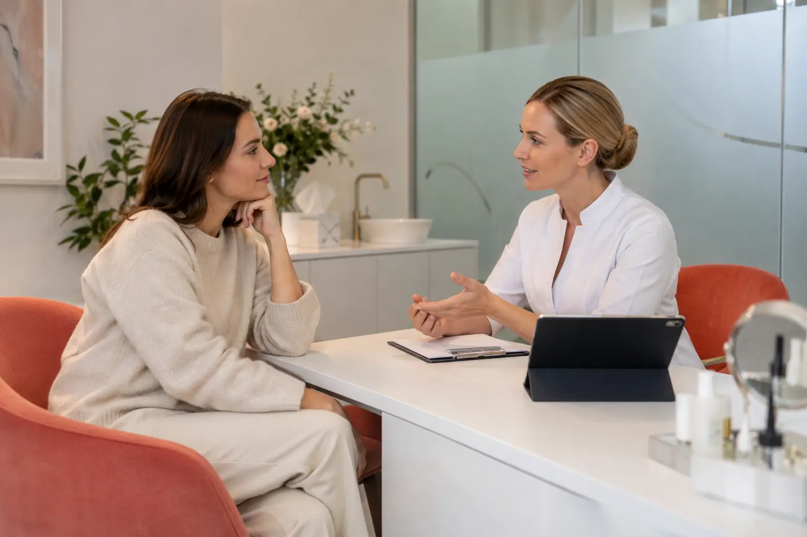

Estetinės procedūros: konsultacija, kosmetinis metodas ir medicininė kompetencija
Autorius: Madbeauty redakcija · Numatyta 2026 m. lapkričio 2 d. 16:00 (Lietuvos laiku)
Kaip atskirti kosmetinę priežiūrą nuo intervencinės procedūros, ką reiškia konsultacija ir kokią informaciją patikrinti prieš renkantis paslaugą.

Renkantis estetinę procedūrą svarbiausia ne jos pavadinimas, o tai, ką specialistas iš tikrųjų darys: kokį prietaisą ar priemonę naudos, kaip ji veikia odą ir kokios kvalifikacijos reikia procedūrai atlikti. „Estetinė“, „neinvazinė“ ar „profesionalus įvertinimas“ gali būti paslaugos aprašymo žodžiai, bet vieni patys neatsako, ar tai kosmetinė paslauga, ar sveikatos priežiūros paslauga.
Pradėkite nuo metodo, ne nuo pažadėto rezultato
Kosmetinė priežiūra gali būti skirta išvaizdai palaikyti ar pagerinti. Tačiau kai procedūra perveria odą, įveda medžiagą į audinius ar naudoja energiją audiniams veikti, reikia tiksliai išsiaiškinti jos mechanizmą, priemonės paskirtį ir kas ją gali atlikti. Skirtingos technologijos gali skambėti panašiai reklamoje, nors jų veikimo būdas skiriasi.
- Paklauskite, ar procedūros metu oda tik tepama kosmetikos priemone, ar naudojamos adatos, injekcija, radijo dažnio energija ar kitas į audinius veikiantis metodas.
- Jei naudojamas prietaisas, sužinokite tikslų jo pavadinimą, modelį ir gamintojo nurodytą paskirtį. Vien „aparatinės procedūros“ aprašymo nepakanka.
- Išsiaiškinkite, kokia priemonė naudojama ir ar jos paskirtis atitinka aprašytą veiksmą. Kremas ar serumas nėra savaime tinkamas įvesti į odą.
- Paprašykite paaiškinti, kokio rezultato galima tikėtis, kokios jo ribos, kokios galimos rizikos ir kokia priežiūra numatyta po procedūros.
Pavyzdžiui, mikroadatinės procedūros pavadinimas turėtų paskatinti klausti, ar adatos iš tiesų praduria odą ir kokį prietaisą jos naudoja. Radijo dažnio mikroadatinė procedūra nėra tas pats, kas odos paviršiaus priežiūra. JAV FDA aprašo mikroadatų veikimą ir atskirai yra paskelbusi saugos pranešimą apie radijo dažnio mikroadatines procedūras. Ši informacija padeda suprasti, kad svarbus konkretus metodas, bet JAV institucijos vertinimas pats savaime nenustato, kaip konkreti paslauga teisiškai klasifikuojama Lietuvoje.
Kosmetinė konsultacija ar sveikatos priežiūros paslauga?
Lietuvoje grožio paslaugos ir asmens sveikatos priežiūros paslaugos nėra tas pats. NVSC nurodo, kad kai kurios procedūros pagal savo pobūdį, naudojamas priemones ar riziką gali būti sveikatos priežiūros paslaugos. Grožio veiklos higienos pasas patvirtina konkrečiai veiklai taikomų higienos sąlygų laikymąsi, bet nėra leidimas atlikti bet kokią intervenciją.
Jeigu paslauga priskiriama sveikatos priežiūrai, tikrinkite ir įstaigos, ir specialisto teisę ją teikti: ar įstaigos licencija apima būtent tą paslaugą nurodytu adresu, ir ar specialisto licencija apima jo atliekamą veiklą. VASPVT taip pat pabrėžia, kad mokymo pažymėjimas savaime nepakeičia reikalingos licencijos. Tiksli išvada priklauso nuo konkretaus metodo ir paslaugos, todėl neaiškų atvejį verta išsiaiškinti prieš sutinkant.
Injekciniai užpildai yra atskiras metodas nuo odos paviršiaus priežiūros: medžiaga suleidžiama į audinius. FDA pateikiama informacija apie užpildus aprašo galimas rimtas komplikacijas, tačiau jos JAV reguliavimo informacija neturėtų būti pateikiama kaip Lietuvos licencijavimo taisyklė. Praktinis klausimas išlieka toks pats: kokia konkreti medžiaga ir paskirtis, koks metodas, kas jį atlieka ir kokia jo teisė teikti šią paslaugą Lietuvoje?
Ką iš tikrųjų gali reikšti konsultacijos pavadinimas?
„Estetinių procedūrų konsultacija“ gali reikšti pokalbį apie norimą išvaizdos pokytį, galimus metodus ar paslaugos sąlygas. „Odos būklės profesionalus įvertinimas“ taip pat nepasako, ar siūlomas kosmetinis stebėjimas, ar sveikatos būklės vertinimas. Paslaugos pavadinimas nepatvirtina specialisto kompetencijos, licencijos ar konkretaus procedūros plano.
- Kokia konsultacijos apimtis ir ar ji vyksta prieš pasirenkant procedūrą?
- Kas atlieka įvertinimą ir kokia jo kvalifikacija? Jei vertinama sveikatos būklė ar siūloma sveikatos priežiūros paslauga, kokia įstaigos ir specialisto licencija tai apima?
- Ar paaiškinamas konkretus prietaisas, priemonė, procedūros eiga, rezultato ribos, rizikos ir priežiūra po jos?
- Ar konsultacija ir pati procedūra yra atskiros paslaugos, kokia jų kaina ir kokios taikomos atšaukimo ar kitos sąlygos?
Jei kreipiatės dėl odos simptomo, ligos ar kitos sveikatos problemos, vien kosmetinis įvertinimas nepakeičia sveikatos priežiūros specialisto konsultacijos. Šiame gide aptariami klausimai padeda patikrinti paslaugos pobūdį; jie nėra individuali diagnozė ar procedūros rekomendacija.
Trumpas patikros sąrašas prieš pasirenkant
- Užrašykite norimą rezultatą ir paprašykite įvardyti tikslų metodą, prietaisą bei naudojamas priemones.
- Paklauskite, ar procedūra pažeidžia odą, įveda medžiagą ar naudoja energiją audiniams veikti.
- Išsiaiškinkite, ar paslauga laikoma grožio, ar sveikatos priežiūros paslauga ir kuo remiantis tai nustatyta.
- Jei tai sveikatos priežiūros paslauga, patikrinkite įstaigos licenciją, veiklos adresą ir specialisto licencijos apimtį.
- Prieš sutikdami išsiaiškinkite procedūros ribas, rizikas, kainą, po jos teikiamas instrukcijas ir pagalbos tvarką iškilus klausimų.
Jeigu atsakymai lieka bendri, paprašykite tikslaus procedūros, prietaiso ar priemonės pavadinimo ir paaiškinimo raštu. Miestą ir norimą paslaugą rinkitės atskirai: kategorijos pavadinimas negarantuoja, kad pasirinktoje vietovėje yra patikrintas teikėjas ar galima registracija.
Procedūrų aprašai kataloge: Estetinių procedūrų konsultacija, Odos būklės profesionalus įvertinimas. Miestą ir realaus teikėjo pasiūlymą pasirinkite kataloge, kai tokia pasiūla pateikta.
Susiję gidai
Šaltiniai
- FDA · mikroadatiniai įrenginiai · www.fda.gov
- FDA · dermaliniai užpildai · www.fda.gov
- NVSC · grožio ir sveikatos paslaugų riba · nvsc.lrv.lt
- VASPVT · sveikatos paslaugų teisėtumo patikra · vaspvt.lrv.lt
- FDA · RF mikroadatinės procedūros saugos pranešimas · www.fda.gov
- Amber Esthetic: plaukų šalinimo zonų kainoraštis · www.amberesthetic.lt